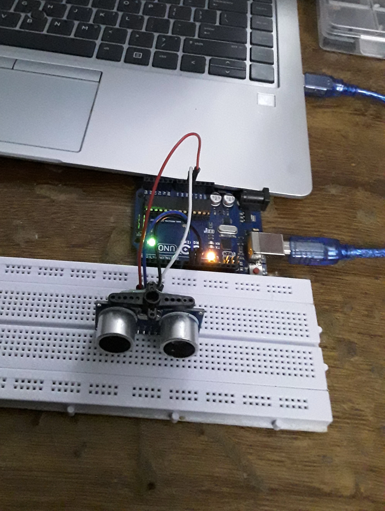
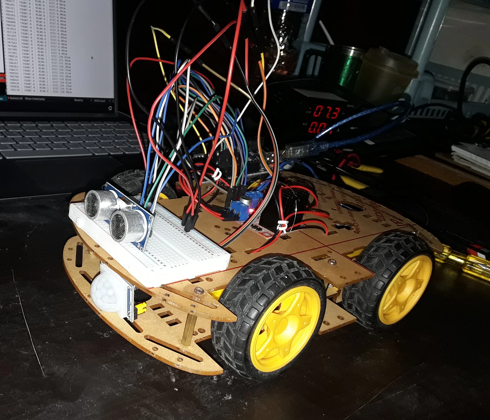
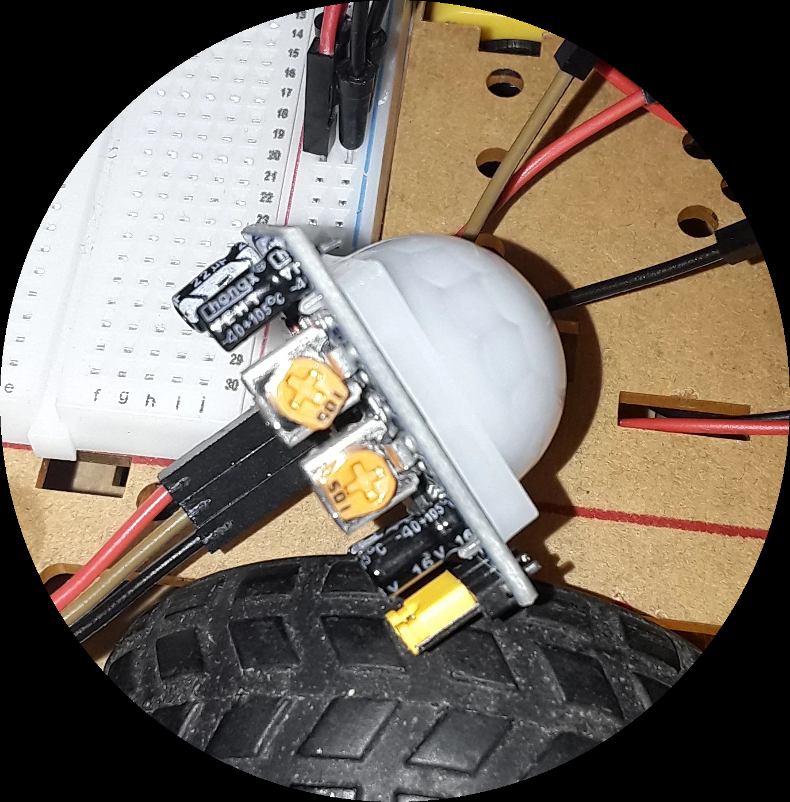
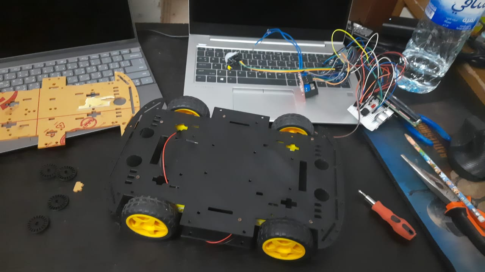
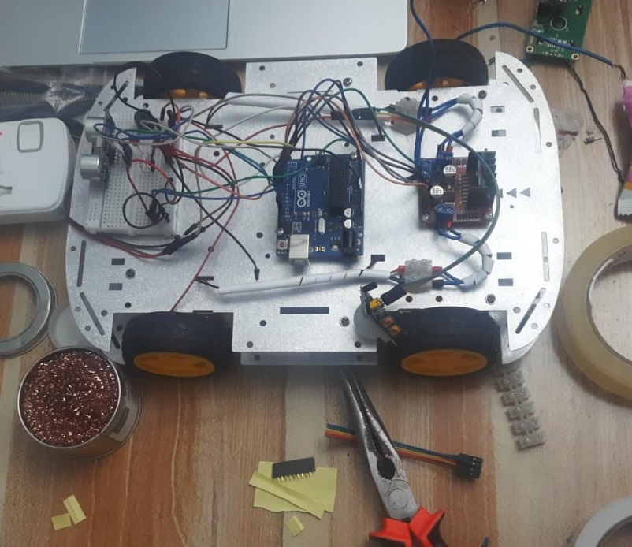
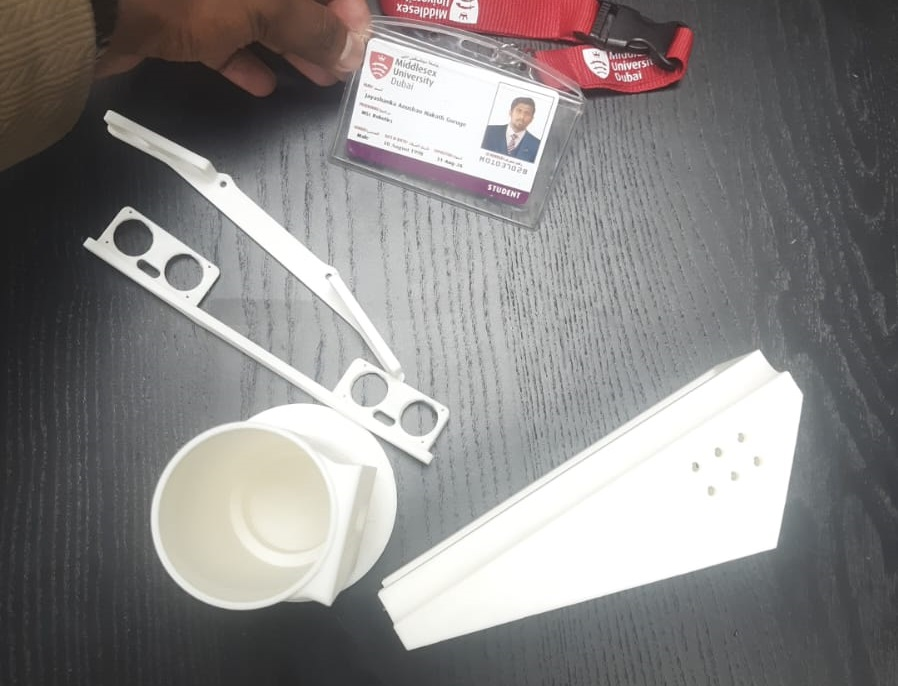

Unit Testing — Every Module First
Before anything was mounted on the chassis, every sensor and module was tested individually on a breadboard with the Arduino UNO. This is the only way to know whether a fault later is a wiring problem, a code problem, or a bad component.
Modules tested in isolation:
| Module | Test | Result |
|---|---|---|
| LCD 16×2 with I2C backpack | Display text, scroll, address confirm | ✓ Good |
| HC-SR04 ultrasonic | Distance reading at 10, 20, 50cm | ✓ Good |
| PIR motion sensor | Motion trigger, delay, re-arm | ✓ Good |
| Combined program | All three running simultaneously | ✓ Good |

Why test individually first: When a combined system fails, the fault space is large. When each module is verified in isolation first, the fault space for integration problems is much smaller — you know the parts work, so the problem is in the connections or the combined code.
The Two-Week Wait — Keeping Progress Moving
While waiting for replacement motors, work continued on other parts of the project to avoid losing momentum:
- Serial communication port — UART structure for Arduino-to-Jetson messaging started and tested in isolation
- Basic ROS concepts — first ROS node structure tested on the Jetson Nano; understanding the publisher/subscriber model with simple test topics before any real sensor integration
- Thesis sections 3.7 and 3.8 — the communication chapter section and the safety design section written while hardware was on hold
- Arduino Mega ordered — the UNO has enough pins for now, but not for the RFID, GSM, and RTC modules planned for Week 04, so a Mega was ordered ahead of time
New Motors Arrive — New Problem Immediately
When the replacement motors arrived, they were fitted to the DIY kit chassis and testing resumed. A new problem appeared within the first test run: one side of the robot was not moving in one direction. The diagnosis process:
| Check | Observation | Verdict |
|---|---|---|
| Power supply (10–12V to L298N) | Reading correct | ✓ OK |
| Arduino PIN signals | All correct on multimeter | ✓ OK |
| L298N driver — IN and EN pins | All correct | ✓ OK |
| Wiring connections to motor | Slight loose connection found | Found |
Root cause: a slightly loose wiring connection on the L298N output to the motor. Fixed. Motor Stage-01 confirmed working on all four wheels.
Full Integration — State Machine Running
With the motor issue resolved, the full integration followed quickly, still on the DIY kit chassis and the Arduino UNO — the Mega was only just ordered and hadn't arrived yet. PIN assignments were corrected for the L298N dual H-bridge:
| Arduino PINs | Direction |
|---|---|
| IN1 + IN4 | Backward |
| IN2 + IN3 | Forward |
| IN1 + IN3 | Left |
| IN2 + IN4 | Right |
HC-SR04 was integrated to the front of the chassis (Trig: PIN 12, Echo: PIN 13, 5V, GND). PIR sensor was mounted onboard. LCD 16×2 connected via I2C (SDA: A4, SDL: A5). Buzzer: PIN 10. LED: PIN 5.
The full 4-state machine was then coded and tested — Active, Monitoring, Alert, Reset. The LCD updates live with the current state.


Linking Fall Detection to the State Machine
The fall detection pipeline was also connected to the Arduino this week — not yet running in real-time, but tested via a pre-recorded video file to verify the serial handshake. The logic:
- Fall detection code on the laptop analyses each frame
- When fall confidence exceeds 70%, sends
"fall_detected"over Arduino serial - Arduino receives the string, immediately transitions to ALERT state
- ALERT state: buzzer activates, LED on, motors locked, LCD shows "ALERT"
This confirmed the serial bridge works end-to-end. The robot physically changed state in response to a software fall detection event. The GSM SMS trigger will be added when the GSM module is confirmed working — that testing is next.
Note: No Jetson Nano was available at this stage. Fall detection was run on a laptop. The serial connection and state machine response are the same regardless of what device sends the fall event — the Arduino does not know or care.
PLA-Printed Chassis — Still Not Enough
With the full state machine now working, the DIY kit's plate was clearly a dead end for anything beyond this stage — it was already cramped with just the breadboard, HC-SR04, PIR, LCD, buzzer and LED, and Week 04 would need to add RFID, GSM, and RTC on top. A black PLA-printed copy of the same plate was tried first, to see if a custom-printed part could at least buy some extra mounting room.

PLA flexed too much under the motor mounts and wasn't rigid enough for the drive train either. The fix was an aluminium plate chassis — more rigid than both the kit plastic and the PLA print, and with enough surface area to mount every module with room to spare.

3D Printing Begins
Alongside the electronics work, 3D printing of custom parts for CARA also started this week. Short clip below from the very first print run:

What Did Not Go Well
The broken gear motors from the Week 02 DIY kit set the hardware timeline back by approximately two weeks. This is the clearest lesson from this phase: always order spare motors (and spare of anything with moving parts) alongside the main order. Delivery time for a single replacement component is the same as the original order — the wait is the same whether you ordered one or five.
The DIY kit plate also turned out to be a dead end once the full component list was mounted, and the PLA-printed copy of it wasn't rigid enough either. Both were useful to rule out quickly, but the aluminium chassis should have been the starting assumption given the full component list was already known from the Week 02 architecture.
The loose wiring connection on the L298N was also a reminder that wiring diagnosis requires checking systematically rather than visually. The loose connection was not visible by eye — it only showed up when each connection was checked individually with slight pressure applied.
Week 03 Checklist
| All modules unit tested individually (LCD, HC-SR04, PIR) | ✓ Complete |
| Combined test program — all sensors simultaneous | ✓ Complete |
| Serial communication port work during wait period | ✓ Complete |
| Arduino Mega ordered — ahead of Week 04's RFID/GSM/RTC additions | ✓ Complete |
| Basic ROS concept tested on Jetson Nano | ✓ Complete |
| Thesis sections 3.7 and 3.8 written | ✓ Complete |
| Replacement motors fitted to DIY kit — loose wiring found and fixed | ✓ Complete |
| L298N PIN mapping corrected, all 4 directions working | ✓ Complete |
| HC-SR04 integrated to chassis front (PIN 12/13) | ✓ Complete |
| PIR sensor onboard and triggering state changes | ✓ Complete |
| Full 4-state machine running on DIY kit (Active / Monitoring / Alert / Reset) | ✓ Complete |
| LCD showing live state updates | ✓ Complete |
| Fall detection serial link tested via video file | ✓ Complete |
| PLA-printed chassis plate tried — not rigid enough | ✓ Complete |
| DIY kit and PLA-printed chassis ruled out — aluminium chassis adopted | ✓ Complete |
| 3D printing started for custom parts | ✓ Complete |